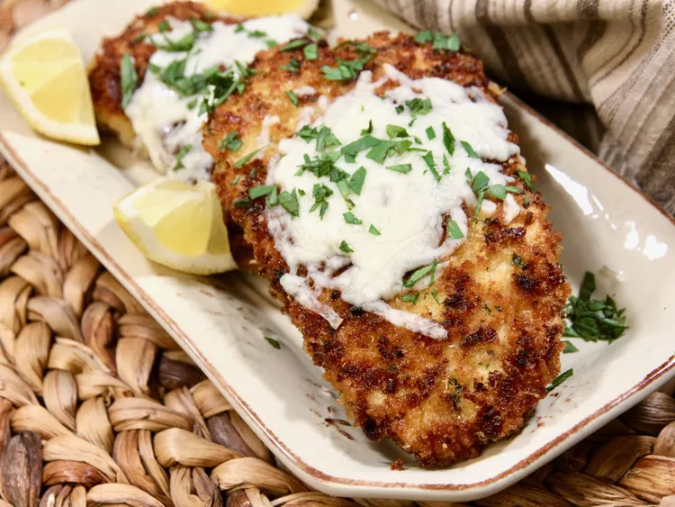

Lemon Chicken

Description
Chicken cutlets are breaded with Romano cheese and panko bread crumbs and accented with fresh lemon flavor.
Ingredients
- 4 chicken cutlets, about 1/2-inch thick
- salt and freshly ground black pepper to taste
- ¼ cup all-purpose flour
- 2 large eggs
- 2 tablespoons water
- ¾ cup Italian-style panko bread crumbs
- ⅓ cup grated Romano cheese
- 2 teaspoons lemon zest
- ½ teaspoon dried oregano
- ½ teaspoon garlic powder
- salt and freshly ground black pepper to taste
- ¼ cup olive oil
- 1 tablespoon unsalted butter
- ¾ cup shredded mozzarella cheese
- 2 teaspoons chopped fresh parsley
- 4 large lemon wedges
Steps
- Preheat the oven to 350 degrees F (175 degrees C). Line a baking sheet with parchment paper.
- Lightly season each side of the chicken with salt and pepper. Add flour to a shallow dish. Whisk eggs and water together in a second dish. Combine panko bread crumbs, Romano cheese, lemon zest, oregano, garlic powder, salt, and pepper in a third shallow dish..
- Pat chicken dry with paper towels, then dredge each chicken cutlet in the flour, shaking off excess. Dip cutlets into the egg wash, allowing excess to drip off, and, finally, dredge in the bread crumbs, pressing down on each side so breading sticks.
- Heat olive oil and butter in a large skillet over medium heat. Add breaded chicken cutlets and cook, undisturbed, until the bottom is crispy and starts to turn golden brown, about 2 minutes. Flip cutlets, and cook for another 2 minutes.
- Transfer cutlets to the baking sheet, and evenly sprinkle each with mozzarella cheese.
- Bake in the preheated oven until chicken is no longer pink and the juices run clear, 6 to 8 minutes. An instant-read thermometer inserted near the bone should read 165 degrees F (74 degrees C). Do not overcook.
- Remove from the oven, garnish with parsley, and serve warm with lemon wedges for spritzing.